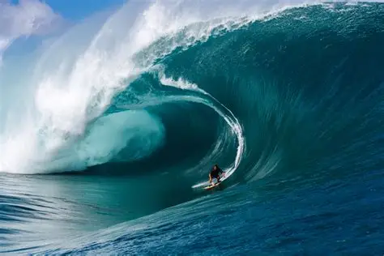

Images
Question
*Jpg is best for detailed photos with many colors Small file size, but some quality loss.
*Gif, good for simple images and animations, Limited to 256 colors
*Png, keeps full image quality, supports transparency
*Resizing Photos, Use photo editing software to resize before uploading.
*CSS only changes display size, full-size image still loads, showing your site